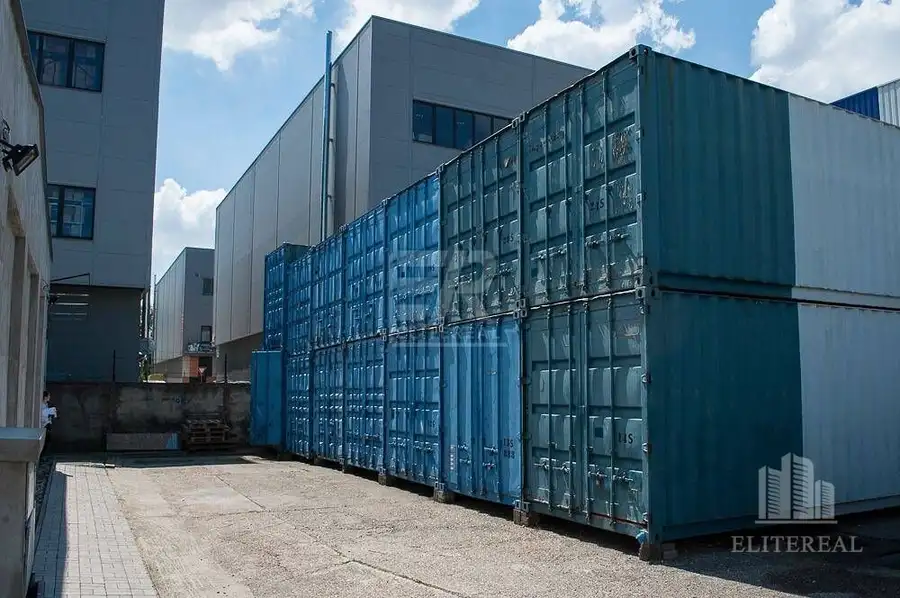
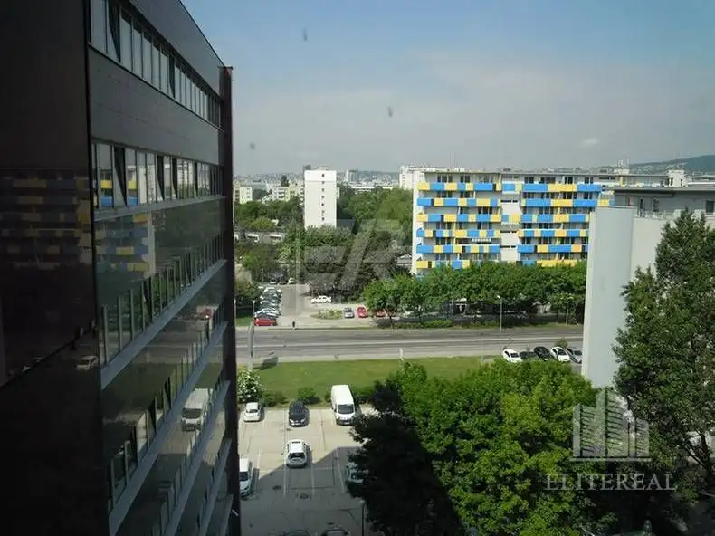
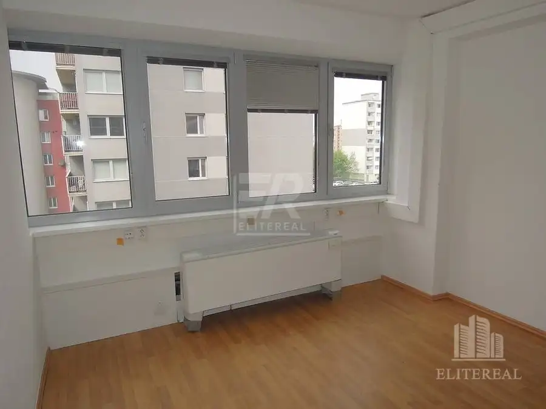
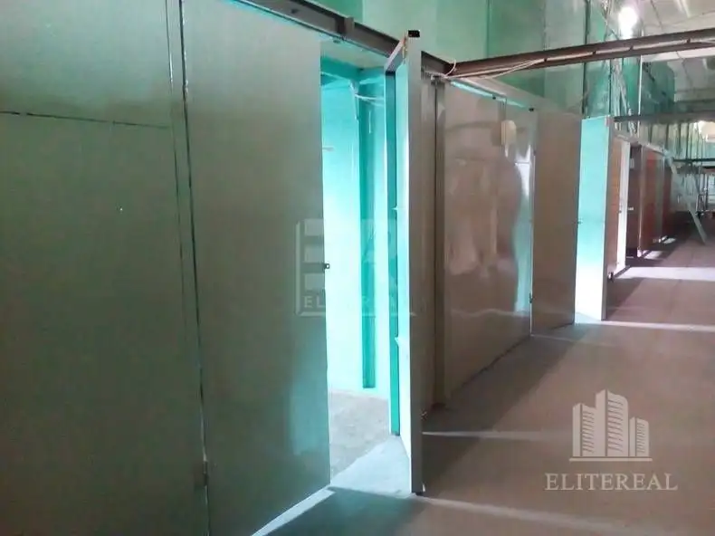
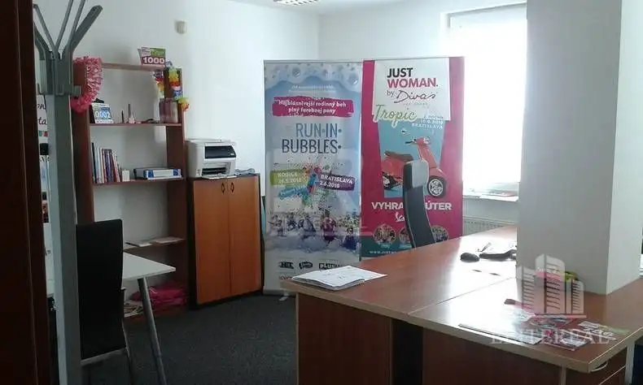
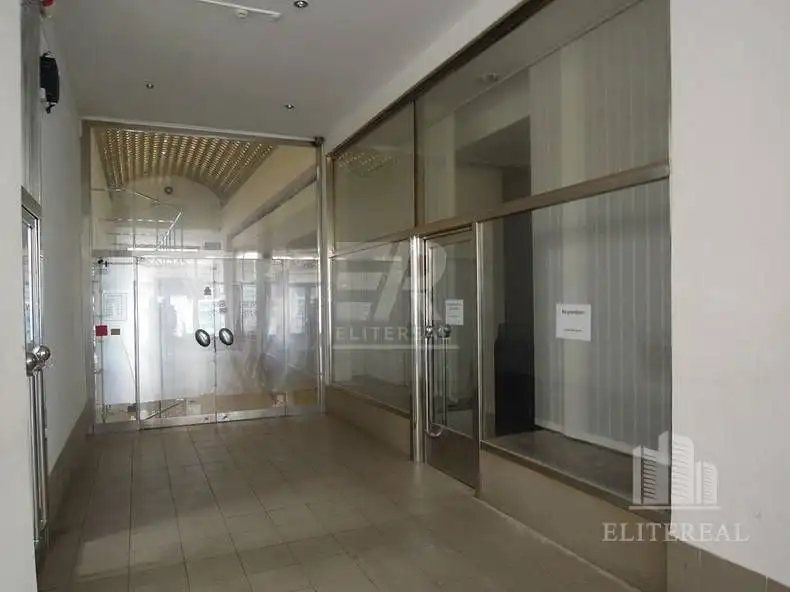
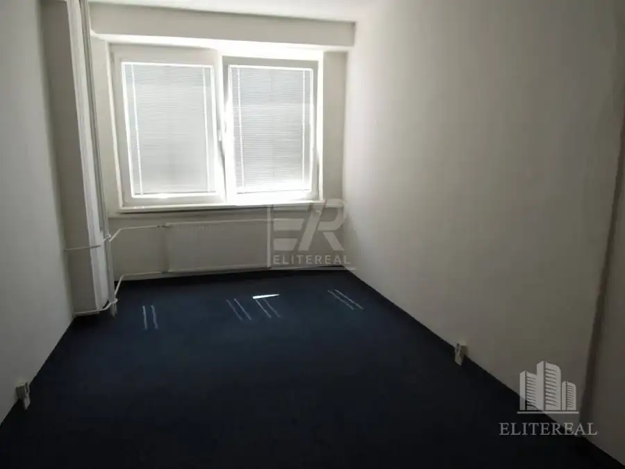
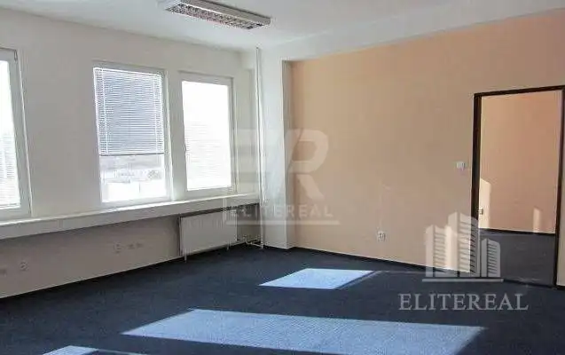
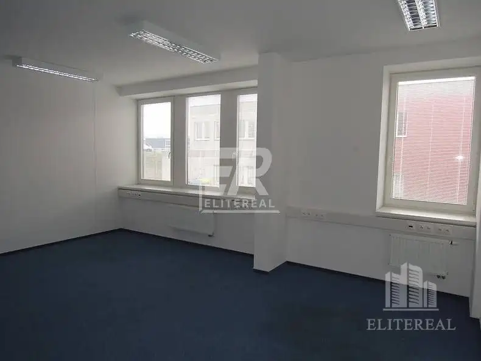

Aktuálna ponuka
9 nehnuteľností, predovšetkým byty. Každá má vlastnú stránku s fotkami, popisom a mapou.
Prezrieť ponukuMonika VasilováRealitná maklérka
Realitná maklérka · ELITEREAL s. r. o.
Predaj a prenájom nehnuteľností · Bratislava, Košice




Nebytové priestory4 Cena dohodouSklad. priestory 18 m2, Stará Vajnorská, Bratislava III - Nové Mesto Nové Mesto, Bratislava 1-izbový18 m²2. podlažie Na prenájom sa ponúkajú skladové priestory o výmere 18 m2 na ul. Stará Vajnorská - Bratislava III - Nové Mesto. Priestory bez kúrenia ale temperované…
Nebytové priestory4 Cena dohodouKanc. 39,72 m2, Bratislava III - Nové Mesto Nové Mesto, Bratislava 1-izbový39.72 m²3. podlažie Na prenájom kancelária na ul. Račianska - Bratislava III - Nové Mesto o výmere 39,72 m2. Klimatizovaná kancelária sa nachádza na 3. podlaží v…
Nebytové priestory3 Cena dohodouObchod. priestor 79,01 m2, Kolárska, Bratislava I - Staré Mesto Staré Mesto, Bratislava 1-izbový79.01 m² Na prenájom obchodný priestor s výkladom na ul. Kolárska, Bratislava I - Staré Mesto o výmere 79,01 m2. Momentálne je to open space, s možnosťou…
Nebytové priestory10 Cena dohodouKukučínova, Kancelária 17 m 2, Košice I - Staré Mesto Staré Mesto, Košice 1-izbový17 m²3. podlažie Na prenájom čiastočne zrekonštruovaná kancelária v zrekonštruovanej administratívnej budove na ul. Kukučínova - Košice I - Staré Mesto, výmera cca 17…
Nebytové priestory6 Cena dohodouRYBNIČNÁ - kancelária 36 m2, Bratislava III - Vajnory Vajnory, Bratislava 1-izbový36 m²4. podlažie Ponúkané priestory sa nachádzajú v novo zrekonštruovanej administratívnej budove s vlastným veľkým parkoviskom. V rámci Bratislavy sú to najlacnejšie…
Nebytové priestory10 Cena dohodouKanc. 30 m2, Pestovateľská, Bratislava II - Ružinov Ružinov, Bratislava 1-izbový30 m² Je situovaná v nízkopodlažnej administratívnej budove s výťahom v blízkosti nákupného centra Avion a IKEA. Vybavenie priestoru: otvárateľné okná s…Tomuto výberu zatiaľ nezodpovedá žiadna ponuka. Napíšte mi, čo hľadáte.
Volám sa Mgr. Monika Vasilová. Som realitná maklérka kancelárie ELITEREAL s. r. o. a pôsobím predovšetkým v lokalitách Bratislava a Košice.
9 nehnuteľností, predovšetkým byty. Každá má vlastnú stránku s fotkami, popisom a mapou.
Prezrieť ponukuBratislava, Košice a okolie. Ponuku si môžete prezrieť podľa lokality.
Nehnuteľnosti v lokaliteOdhad trhovej ceny, príprava prezentácie, obhliadky, zmluvy a odovzdanie nehnuteľnosti.
Dohodnúť stretnutieNa čo sa pýtate najčastejšie, skôr než sa stretneme.
Odhad trhovej ceny vychádza z aktuálnych ponúk a predajov v lokalite, nie z cenníkových tabuliek. Podmienky Vám poviem pri prvom telefonáte.
Najprv obhliadka a odhad ceny, potom príprava prezentácie (fotografie, popis, inzercia), obhliadky so záujemcami, rezervačná zmluva, kúpna zmluva, návrh na vklad do katastra a odovzdanie nehnuteľnosti. O každom kroku viete vopred.
Najrýchlejšie cez WhatsApp alebo telefón. Termín stretnutia alebo obhliadky dohodneme podľa Vás.